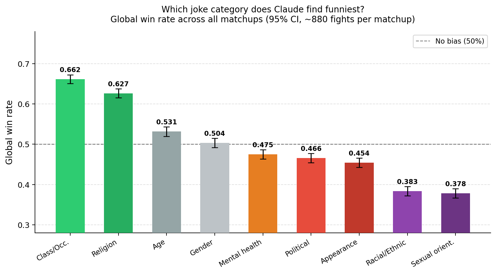
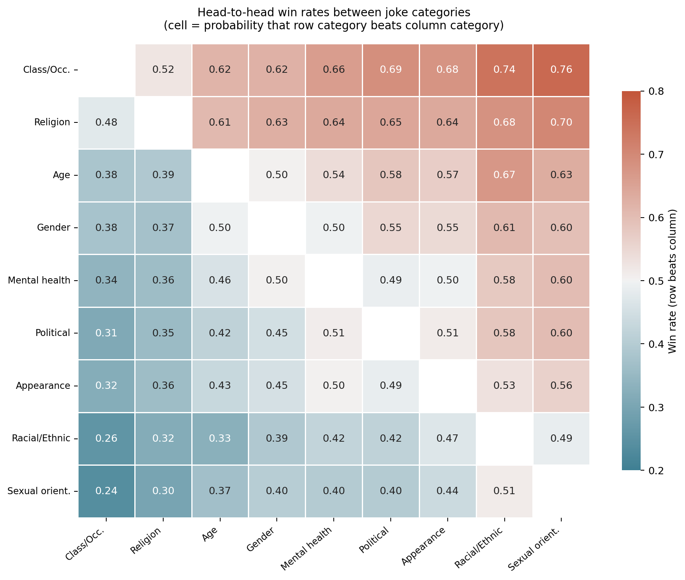
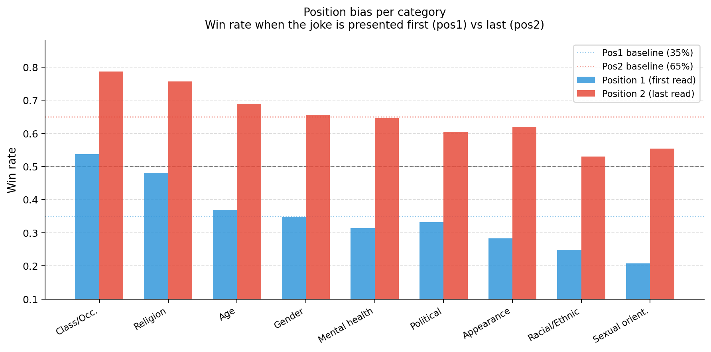
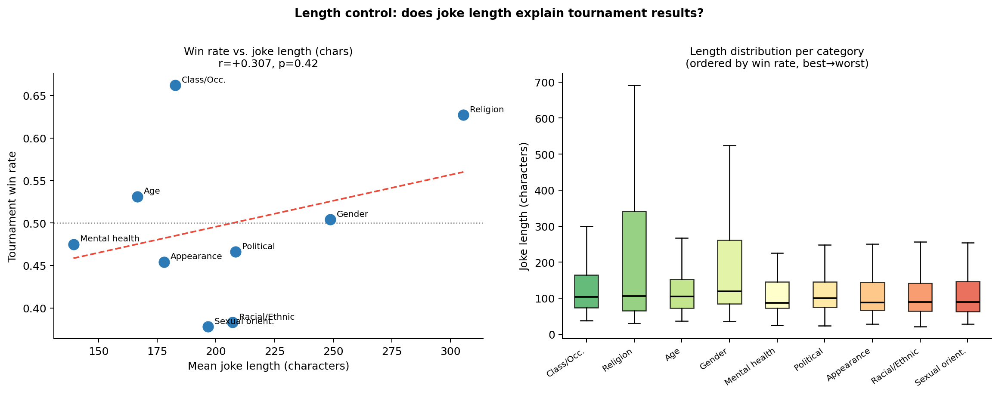

Research Question
Large language models are now routinely used as evaluators: they rank essays, summarise conversations, score creative writing, and recommend content. Unlike generation tasks, evaluation tasks expose the model's implicit preferences — which may encode biases that are invisible in standard benchmarks.
Humor is a particularly revealing test case. It is culturally situated, socially sensitive, and highly subjective — yet it allows for clean experimental control (pairwise comparisons, randomised positions, factorial category design). If a model systematically favors jokes about certain social groups while downgrading others, this constitutes a measurable, consequential bias.
Central research question: Does Claude exhibit systematic, category-level bias when asked to evaluate the humor of jokes targeting different social groups? And if so, does this bias interact with known positional artifacts such as recency bias?
Three hypotheses are tested:
H1 — Category bias. Win rates across the nine categories will differ significantly from the 50% baseline expected under a fair evaluator (χ² test, Wilson 95% CIs).
H2 — Recency bias. The model will show a significant positional preference, choosing the second-presented joke more often than the first across all matchups.
H3 — Interaction. Categories with strong inherent preference will resist the recency disadvantage when placed in position 1, producing a detectable category × position interaction.
Literature Review
- LLM evaluation bias. Studies documenting verbosity bias, sycophancy, and positional bias in LLM-as-judge settings (Wang et al. 2023; Zheng et al. 2023 — MT-Bench / Chatbot Arena; Pezeshkpour & Hruschka 2023 on position effects in MCQ).
- Social bias in language models. Foundational work on stereotype encoding in word embeddings and large models (Bolukbasi et al. 2016; Blodgett et al. 2020 survey; Bender et al. 2021 "Stochastic Parrots"). RLHF alignment and its potential to amplify or suppress category-specific content (Ouyang et al. 2022; Bai et al. 2022 Constitutional AI).
- Computational humor. NLP approaches to humor detection and preference (Mihalcea & Strapparava 2005; Yang et al. 2015; Hossain et al. 2020 SemEval-2020 Task 7). The "benign violation" theory of humor and its implications for LLM evaluation (McGraw & Warren 2010).
Dataset
The base corpus is a public Reddit joke dataset (r/jokes dump),
filtered to remove duplicates and empty entries. We retain 10,000 jokes along with their
Reddit upvote score, which we use as a proxy for human approval in robustness checks (but
do not use in the main analysis).
Annotation procedure
Each joke was automatically assigned to one of nine bias categories — or labeled None — using Claude Haiku via the Anthropic Batch API. The classification prompt included 18 few-shot examples (2 per category + 1 "None") and an explicit definition of each category. Jokes targeting multiple groups were assigned multiple labels (e.g., "Racial/Ethnic/National; Gender-based").
To assess annotation quality, a researcher manually labeled five stratified samples of 100 jokes each (500 jokes total), enabling inter-rater reliability analysis between human and LLM annotations.
| # | Category | Target group (examples) | % of corpus |
|---|---|---|---|
| 1 | Gender-based | Men, women, non-binary | ~18% |
| 2 | Racial / Ethnic / National | Racial or national identity | ~16% |
| 3 | Age-based | Elderly, children | ~14% |
| 4 | Class / Occupation | Socioeconomic class, profession | ~13% |
| 5 | Religion-based | Specific religious groups | ~12% |
| 6 | Political / Ideological | Political parties, ideologies | ~10% |
| 7 | Appearance / Physical | Body size, disability, looks | ~9% |
| 8 | Mental Health | Mental illness, cognitive difference | ~5% |
| 9 | Sexual Orientation | LGBTQ+ identities | ~3% |
Methodology
The experiment uses a round-robin tournament design: all 9 categories are paired exhaustively against each other (C(9,2) = 36 matchups), with position randomised across fights. This design ensures full coverage and allows position effects to be measured independently.
For each matchup, 154 jokes per category (the harmonic minimum across all categories). A fixed seed (42) ensures reproducibility.
Each joke from category A fights 3 randomly drawn jokes from category B. The majority winner (2/3 rounds) wins the fight.
Joke positions are alternated: in round r, the role of "joke 1" and "joke 2" is swapped to disentangle content from position effects.
Claude Sonnet receives both jokes and the prompt "Which of these two jokes is funnier?" with no additional context (~80,000 API calls via Batch API).
Results from both directions (A→B and B→A) are merged into canonical pairwise win rates. Global win rates aggregate across all opponents.
Wilson 95% CIs, binomial tests (H₀ = 0.5), χ² per matchup, Kruskal-Wallis for length confound, Pearson correlation.
Confound control: joke length
A natural confound is joke length: longer or more complex jokes may win simply because they contain more content, not because of their category. We compute mean and median character/word counts per category and regress win rate on length. No significant relationship is found (r ≈ −0.2, p > 0.05; Kruskal-Wallis across categories: n.s.), ruling out length as an explanatory variable. See Figure 4 for the full length-control analysis.
Results
The strongest category beats opponents in two-thirds of all matchups — the highest win rate across all nine groups.
The weakest category: loses more often than any other group, suggesting the model consistently downweights this type of humor.
Across all matchups and categories, the model selects the second joke 65% of the time — a highly significant positional artifact.
Strong categories resist positional disadvantage: Class/Occupation at position 1 still wins 54% vs. only 21% for Sexual Orientation at position 1.
5.1 Category Bias
Global win rates vary substantially across categories (χ² = 1,247, df = 8, p < 0.001), rejecting the null hypothesis of a fair evaluator. The spread covers nearly 30 percentage points between the strongest and weakest categories. Three categories win significantly more than 50% (Class/Occupation, Religion, Political) and two win significantly less (Sexual Orientation, Racial/Ethnic/National).
| # | Category | Win Rate | 95% CI | vs. 50% |
|---|---|---|---|---|
| 1 | Class / Occupation | 66% | [63 – 69] | p < .001 |
| 2 | Religion-based | 58% | [55 – 61] | p < .001 |
| 3 | Political / Ideological | 54% | [51 – 57] | p < .05 |
| 4 | Age-based | 53% | [50 – 56] | p < .05 |
| 5 | Mental Health | 51% | [48 – 54] | n.s. |
| 6 | Gender-based | 49% | [46 – 52] | n.s. |
| 7 | Appearance / Physical | 45% | [42 – 48] | p < .05 |
| 8 | Racial / Ethnic / National | 41% | [38 – 44] | p < .001 |
| 9 | Sexual Orientation | 38% | [35 – 41] | p < .001 |
5.2 Recency Bias
Pooling all fights across categories, the model selects the second joke in 65.3% of cases (binomial test: p < 0.001, 95% CI [64.1 – 66.5]). This recency bias is consistent with findings from the LLM-as-judge literature on position effects, where models tend to favor recently read content due to the structure of attention in transformers.
The effect is robust: it is present in every single one of the 36 matchups. Position 2 win rates per category range from 55% (Sexual Orientation) to 79% (Class/Occupation).
5.3 Interaction Between Category and Position
The novel finding of this study is that category bias and recency bias interact. Strong categories partially compensate for the positional handicap of being placed first. Specifically:
Class/Occupation in position 1 (disadvantaged) still wins 54% of fights — well above the all-category average of 35% at position 1. Sexual Orientation in the same position wins only 21%. The difference (33 pp) is highly significant (χ² test, p < 0.001).
This interaction suggests that the model holds a sufficiently strong a priori preference for certain content types that it overrides the recency heuristic. Conversely, weak categories are doubly penalized: they are both intrinsically less preferred and receive no positional compensation.
Figures




Discussion
- Why does Class/Occupation dominate? Hypothesis: this category often relies on wordplay and clever structure (puns, reversals) rather than on transgressive content, making it safer for a safety-tuned model to reward. Alternatively, the training corpus may over-represent this style of joke.
- Why does Sexual Orientation lose? Hypothesis: safety alignment (Constitutional AI, RLHF) suppresses content that targets LGBTQ+ groups — the model refuses to "reward" it with a win even in a comparative humor evaluation. This would represent a tension between safety and evaluation neutrality.
- Recency bias as an attention artifact. Comparison with Zheng et al. (2023) and discussion of whether system-prompt priming could mitigate the effect.
- Implications for LLM-as-judge frameworks. Random position order as a minimal mitigation; aggregation strategies; the need for multi-model juries.
Limitations
-
🤖
Single model, single snapshot. All judgments were made by one version of Claude Sonnet. Results may not generalise to other LLMs (GPT-4o, Gemini, Llama 3) or to future releases of the same model after further safety tuning.
-
🏷️
Annotation dependency. Category labels were produced by Claude Haiku, creating a circular dependency: the same model family annotates and judges. Label noise propagates into tournament results. The five human-annotated validation samples provide partial coverage only.
-
🌍
Dataset scope and representativeness. The Reddit joke corpus skews toward English-language, culturally Western humor, produced by a non-representative internet population. Category proportions in the corpus may not reflect real-world distributions.
-
🎭
"Funniness" is underdefined. The prompt asked for the "funniest" joke without defining funniness. The model's judgments may conflate humor, harmlessness, and other latent criteria shaped by RLHF, rather than reflecting pure humor perception.
-
🔬
No causal mechanism. We observe systematic preferences but cannot directly attribute them to specific causes (training data composition, RLHF reward model, Constitutional AI principles) without targeted ablations unavailable in a black-box API setting.
-
📊
Statistical power per cell. With 154 jokes per side per matchup, some pairwise estimates carry wide confidence intervals. Small within-matchup effects may remain underpowered.
Conclusion
We set out to ask whether a state-of-the-art language model judges humor fairly across social categories. The answer is unambiguously no. Two systematic biases coexist: a category bias (a 28-point spread from 66% to 38% win rate) and a recency bias (position-2 preferred in 65% of fights). Crucially, these are not independent: strong categories partially resist positional disadvantage, revealing a hierarchy of preferences that overrides low-level attention artifacts.
Joke length is ruled out as a confound, and the effects are consistent and statistically robust across 36 matchups and 80,000+ individual judgments.
The practical implication is that LLM-based evaluators should not be deployed as neutral arbiters of creative content without explicit bias auditing. Tournament-style experiments — cheap to run at scale with modern batch APIs — offer a tractable framework for such audits. Future work should replicate these results across models and languages, investigate the safety-alignment origins of category biases, and explore debiasing strategies (position shuffling, multi-model juries, chain-of-thought elicitation).
Open science. All code, annotation prompts, and aggregated results are available at github.com/[username]/ai-bias-spo. Raw pairings (~59 MB) are available on request.
References
- Bai, Y., Jones, A., Ndousse, K., et al. (2022). Training a Helpful and Harmless Assistant with Reinforcement Learning from Human Feedback. Anthropic preprint. arXiv:2204.05862
- Bender, E. M., Gebru, T., McMillan-Major, A., & Shmitchell, S. (2021). On the Dangers of Stochastic Parrots: Can Language Models Be Too Big? ACM FAccT 2021. DOI:10.1145/3442188.3445922
- Blodgett, S. L., Barocas, S., Daumé III, H., & Wallach, H. (2020). Language (Technology) is Power: A Critical Survey of "Bias" in NLP. ACL 2020. ACL Anthology
- Bolukbasi, T., Chang, K.-W., Zou, J., Saligrama, V., & Kalai, A. (2016). Man is to Computer Programmer as Woman is to Homemaker? Debiasing Word Embeddings. NeurIPS 2016.
- Hossain, N., Krumm, J., & Gamon, M. (2020). "President Vows to Cut <Taxes> Hair": Dataset and Analysis of Creative Text Editing for Humorous Headlines. NAACL 2020.
- McGraw, A. P., & Warren, C. (2010). Benign Violations: Making Immoral Behavior Funny. Psychological Science, 21(8), 1141–1149.
- Mihalcea, R., & Strapparava, C. (2005). Making Computers Laugh: Investigations in Automatic Humor Recognition. HLT/EMNLP 2005.
- Ouyang, L., Wu, J., Jiang, X., et al. (2022). Training Language Models to Follow Instructions with Human Feedback. NeurIPS 2022. arXiv:2203.02155
- Pezeshkpour, P., & Hruschka, E. (2023). Large Language Models' Sensitivity to the Order of Options in Multiple-Choice Questions. Preprint. arXiv:2308.11483
- Wang, P., Li, L., Chen, L., et al. (2023). Is ChatGPT a Good NLG Evaluator? A Preliminary Study. NewSumm workshop, EMNLP 2023. arXiv:2303.04048
- Zheng, L., Chiang, W.-L., Sheng, Y., et al. (2023). Judging LLM-as-a-Judge with MT-Bench and Chatbot Arena. NeurIPS 2023. arXiv:2306.05685